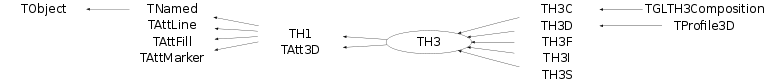

class TH3: public TH1, public TAtt3D
- - *-* The 3-D histogram classes derived from the 1-D histogram classes. *-* all operations are supported (fill, fit). *-* Drawing is currently restricted to one single option. *-* A cloud of points is drawn. The number of points is proportional to *-* cell content. - TH3C a 3-D histogram with one byte per cell (char) TH3S a 3-D histogram with two bytes per cell (short integer) TH3I a 3-D histogram with four bytes per cell (32 bits integer) TH3F a 3-D histogram with four bytes per cell (float) TH3D a 3-D histogram with eight bytes per cell (double) -
Function Members (Methods)
public:
| TH3(const TH3&) | |
| virtual | ~TH3() |
| void | TObject::AbstractMethod(const char* method) const |
| virtual void | TH1::Add(const TH1* h1, Double_t c1 = 1) |
| virtual void | TH1::Add(TF1* h1, Double_t c1 = 1, Option_t* option = "") |
| virtual void | TH1::Add(const TH1* h, const TH1* h2, Double_t c1 = 1, Double_t c2 = 1)MENU |
| virtual void | TH1::AddBinContent(Int_t bin) |
| virtual void | TH1::AddBinContent(Int_t bin, Double_t w) |
| static void | TH1::AddDirectory(Bool_t add = kTRUE) |
| static Bool_t | TH1::AddDirectoryStatus() |
| virtual void | TObject::AppendPad(Option_t* option = "") |
| virtual void | TH1::Browse(TBrowser* b) |
| virtual Int_t | BufferEmpty(Int_t action = 0) |
| virtual Double_t | TH1::Chi2Test(const TH1* h2, Option_t* option = "UU", Double_t* res = 0) const |
| virtual Double_t | TH1::Chi2TestX(const TH1* h2, Double_t& chi2, Int_t& ndf, Int_t& igood, Option_t* option = "UU", Double_t* res = 0) const |
| static TClass* | Class() |
| virtual const char* | TObject::ClassName() const |
| virtual void | TNamed::Clear(Option_t* option = "") |
| virtual TObject* | TNamed::Clone(const char* newname = "") const |
| virtual Int_t | TNamed::Compare(const TObject* obj) const |
| virtual Double_t | TH1::ComputeIntegral() |
| virtual void | Copy(TObject& hnew) const |
| virtual void | TObject::Delete(Option_t* option = "")MENU |
| virtual void | TH1::DirectoryAutoAdd(TDirectory*) |
| Int_t | TAttLine::DistancetoLine(Int_t px, Int_t py, Double_t xp1, Double_t yp1, Double_t xp2, Double_t yp2) |
| virtual Int_t | TH1::DistancetoPrimitive(Int_t px, Int_t py) |
| virtual void | TH1::Divide(const TH1* h1) |
| virtual void | TH1::Divide(TF1* f1, Double_t c1 = 1) |
| virtual void | TH1::Divide(const TH1* h1, const TH1* h2, Double_t c1 = 1, Double_t c2 = 1, Option_t* option = "")MENU |
| virtual void | TH1::Draw(Option_t* option = "") |
| virtual void | TObject::DrawClass() constMENU |
| virtual TObject* | TObject::DrawClone(Option_t* option = "") constMENU |
| virtual TH1* | TH1::DrawCopy(Option_t* option = "") const |
| virtual TH1* | TH1::DrawNormalized(Option_t* option = "", Double_t norm = 1) const |
| virtual void | TH1::DrawPanel()MENU |
| virtual void | TObject::Dump() constMENU |
| virtual void | TObject::Error(const char* method, const char* msgfmt) const |
| virtual void | TH1::Eval(TF1* f1, Option_t* option = "") |
| virtual void | TObject::Execute(const char* method, const char* params, Int_t* error = 0) |
| virtual void | TObject::Execute(TMethod* method, TObjArray* params, Int_t* error = 0) |
| virtual void | TH1::ExecuteEvent(Int_t event, Int_t px, Int_t py) |
| virtual void | TObject::Fatal(const char* method, const char* msgfmt) const |
| virtual TH1* | TH1::FFT(TH1* h_output, Option_t* option) |
| virtual Int_t | Fill(Double_t) |
| virtual Int_t | Fill(Double_t, Double_t) |
| virtual Int_t | Fill(const char*, Double_t) |
| Int_t | Fill(Double_t, const char*, Double_t) |
| Int_t | Fill(const char*, Double_t, Double_t) |
| Int_t | Fill(const char*, const char*, Double_t) |
| virtual Int_t | Fill(Double_t x, Double_t y, Double_t z) |
| virtual Int_t | Fill(Double_t x, Double_t y, Double_t z, Double_t w) |
| virtual Int_t | Fill(const char* namex, const char* namey, const char* namez, Double_t w) |
| virtual Int_t | Fill(const char* namex, Double_t y, const char* namez, Double_t w) |
| virtual Int_t | Fill(const char* namex, const char* namey, Double_t z, Double_t w) |
| virtual Int_t | Fill(Double_t x, const char* namey, const char* namez, Double_t w) |
| virtual Int_t | Fill(Double_t x, const char* namey, Double_t z, Double_t w) |
| virtual Int_t | Fill(Double_t x, Double_t y, const char* namez, Double_t w) |
| virtual void | TNamed::FillBuffer(char*& buffer) |
| virtual void | TH1::FillN(Int_t ntimes, const Double_t* x, const Double_t* w, Int_t stride = 1) |
| virtual void | TH1::FillN(Int_t, const Double_t*, const Double_t*, const Double_t*, Int_t) |
| virtual void | FillRandom(const char* fname, Int_t ntimes = 5000) |
| virtual void | FillRandom(TH1* h, Int_t ntimes = 5000) |
| virtual Int_t | TH1::FindBin(Double_t x, Double_t y = 0, Double_t z = 0) |
| virtual Int_t | FindFirstBinAbove(Double_t threshold = 0, Int_t axis = 1) const |
| virtual Int_t | TH1::FindFixBin(Double_t x, Double_t y = 0, Double_t z = 0) const |
| virtual Int_t | FindLastBinAbove(Double_t threshold = 0, Int_t axis = 1) const |
| virtual TObject* | TH1::FindObject(const char* name) const |
| virtual TObject* | TH1::FindObject(const TObject* obj) const |
| virtual TFitResultPtr | TH1::Fit(const char* formula, Option_t* option = "", Option_t* goption = "", Double_t xmin = 0, Double_t xmax = 0)MENU |
| virtual TFitResultPtr | TH1::Fit(TF1* f1, Option_t* option = "", Option_t* goption = "", Double_t xmin = 0, Double_t xmax = 0) |
| static Int_t | TH1::FitOptionsMake(Option_t* option, Foption_t& Foption) |
| virtual void | TH1::FitPanel()MENU |
| virtual void | FitSlicesZ(TF1* f1 = 0, Int_t binminx = 1, Int_t binmaxx = 0, Int_t binminy = 1, Int_t binmaxy = 0, Int_t cut = 0, Option_t* option = "QNR")MENU |
| TH1* | TH1::GetAsymmetry(TH1* h2, Double_t c2 = 1, Double_t dc2 = 0) |
| virtual Color_t | TH1::GetAxisColor(Option_t* axis = "X") const |
| virtual Float_t | TH1::GetBarOffset() const |
| virtual Float_t | TH1::GetBarWidth() const |
| virtual Int_t | TH1::GetBin(Int_t binx, Int_t biny = 0, Int_t binz = 0) const |
| virtual Double_t | TH1::GetBinCenter(Int_t bin) const |
| virtual Double_t | TH1::GetBinContent(Int_t bin) const |
| virtual Double_t | TH1::GetBinContent(Int_t binx, Int_t biny) const |
| virtual Double_t | TH1::GetBinContent(Int_t binx, Int_t biny, Int_t binz) const |
| virtual Double_t | TH1::GetBinError(Int_t bin) const |
| virtual Double_t | TH1::GetBinError(Int_t binx, Int_t biny) const |
| virtual Double_t | TH1::GetBinError(Int_t binx, Int_t biny, Int_t binz) const |
| virtual Double_t | TH1::GetBinLowEdge(Int_t bin) const |
| virtual Double_t | TH1::GetBinWidth(Int_t bin) const |
| virtual Double_t | TH1::GetBinWithContent(Double_t c, Int_t& binx, Int_t firstx = 0, Int_t lastx = 0, Double_t maxdiff = 0) const |
| virtual Double_t | GetBinWithContent3(Double_t c, Int_t& binx, Int_t& biny, Int_t& binz, Int_t firstx = 0, Int_t lastx = 0, Int_t firsty = 0, Int_t lasty = 0, Int_t firstz = 0, Int_t lastz = 0, Double_t maxdiff = 0) const |
| virtual void | TH1::GetBinXYZ(Int_t binglobal, Int_t& binx, Int_t& biny, Int_t& binz) const |
| const Double_t* | TH1::GetBuffer() const |
| Int_t | TH1::GetBufferLength() const |
| Int_t | TH1::GetBufferSize() const |
| virtual Double_t | TH1::GetCellContent(Int_t binx, Int_t biny) const |
| virtual Double_t | TH1::GetCellError(Int_t binx, Int_t biny) const |
| virtual void | TH1::GetCenter(Double_t* center) const |
| virtual Int_t | TH1::GetContour(Double_t* levels = 0) |
| virtual Double_t | TH1::GetContourLevel(Int_t level) const |
| virtual Double_t | TH1::GetContourLevelPad(Int_t level) const |
| virtual Double_t | GetCorrelationFactor(Int_t axis1 = 1, Int_t axis2 = 2) const |
| virtual Double_t | GetCovariance(Int_t axis1 = 1, Int_t axis2 = 2) const |
| static Int_t | TH1::GetDefaultBufferSize() |
| static Bool_t | TH1::GetDefaultSumw2() |
| virtual Int_t | TH1::GetDimension() const |
| TDirectory* | TH1::GetDirectory() const |
| virtual Option_t* | TObject::GetDrawOption() const |
| static Long_t | TObject::GetDtorOnly() |
| virtual Double_t | TH1::GetEffectiveEntries() const |
| virtual Double_t | TH1::GetEntries() const |
| virtual Color_t | TAttFill::GetFillColor() const |
| virtual Style_t | TAttFill::GetFillStyle() const |
| virtual TF1* | TH1::GetFunction(const char* name) const |
| virtual const char* | TObject::GetIconName() const |
| virtual Double_t* | TH1::GetIntegral() |
| virtual Double_t | TH1::GetKurtosis(Int_t axis = 1) const |
| virtual Color_t | TH1::GetLabelColor(Option_t* axis = "X") const |
| virtual Style_t | TH1::GetLabelFont(Option_t* axis = "X") const |
| virtual Float_t | TH1::GetLabelOffset(Option_t* axis = "X") const |
| virtual Float_t | TH1::GetLabelSize(Option_t* axis = "X") const |
| virtual Color_t | TAttLine::GetLineColor() const |
| virtual Style_t | TAttLine::GetLineStyle() const |
| virtual Width_t | TAttLine::GetLineWidth() const |
| TList* | TH1::GetListOfFunctions() const |
| virtual void | TH1::GetLowEdge(Double_t* edge) const |
| virtual Color_t | TAttMarker::GetMarkerColor() const |
| virtual Size_t | TAttMarker::GetMarkerSize() const |
| virtual Style_t | TAttMarker::GetMarkerStyle() const |
| virtual Double_t | TH1::GetMaximum(Double_t maxval = FLT_MAX) const |
| virtual Int_t | TH1::GetMaximumBin() const |
| virtual Int_t | TH1::GetMaximumBin(Int_t& locmax, Int_t& locmay, Int_t& locmaz) const |
| virtual Double_t | TH1::GetMaximumStored() const |
| virtual Double_t | TH1::GetMean(Int_t axis = 1) const |
| virtual Double_t | TH1::GetMeanError(Int_t axis = 1) const |
| virtual Double_t | TH1::GetMinimum(Double_t minval = -FLT_MAX) const |
| virtual Int_t | TH1::GetMinimumBin() const |
| virtual Int_t | TH1::GetMinimumBin(Int_t& locmix, Int_t& locmiy, Int_t& locmiz) const |
| virtual Double_t | TH1::GetMinimumStored() const |
| virtual const char* | TNamed::GetName() const |
| virtual Int_t | TH1::GetNbinsX() const |
| virtual Int_t | TH1::GetNbinsY() const |
| virtual Int_t | TH1::GetNbinsZ() const |
| virtual Int_t | TH1::GetNdivisions(Option_t* axis = "X") const |
| virtual Double_t | TH1::GetNormFactor() const |
| virtual char* | TH1::GetObjectInfo(Int_t px, Int_t py) const |
| static Bool_t | TObject::GetObjectStat() |
| virtual Option_t* | TH1::GetOption() const |
| TVirtualHistPainter* | TH1::GetPainter(Option_t* option = "") |
| virtual Int_t | TH1::GetQuantiles(Int_t nprobSum, Double_t* q, const Double_t* probSum = 0) |
| virtual Double_t | TH1::GetRandom() const |
| virtual void | GetRandom3(Double_t& x, Double_t& y, Double_t& z) |
| virtual Double_t | TH1::GetRMS(Int_t axis = 1) const |
| virtual Double_t | TH1::GetRMSError(Int_t axis = 1) const |
| virtual Double_t | TH1::GetSkewness(Int_t axis = 1) const |
| virtual void | GetStats(Double_t* stats) const |
| virtual Double_t | TH1::GetSumOfWeights() const |
| virtual TArrayD* | TH1::GetSumw2() |
| virtual const TArrayD* | TH1::GetSumw2() const |
| virtual Int_t | TH1::GetSumw2N() const |
| virtual Float_t | TH1::GetTickLength(Option_t* axis = "X") const |
| virtual const char* | TNamed::GetTitle() const |
| virtual Style_t | TH1::GetTitleFont(Option_t* axis = "X") const |
| virtual Float_t | TH1::GetTitleOffset(Option_t* axis = "X") const |
| virtual Float_t | TH1::GetTitleSize(Option_t* axis = "X") const |
| virtual UInt_t | TObject::GetUniqueID() const |
| TAxis* | TH1::GetXaxis() const |
| TAxis* | TH1::GetYaxis() const |
| TAxis* | TH1::GetZaxis() const |
| virtual Bool_t | TObject::HandleTimer(TTimer* timer) |
| virtual ULong_t | TNamed::Hash() const |
| virtual void | TObject::Info(const char* method, const char* msgfmt) const |
| virtual Bool_t | TObject::InheritsFrom(const char* classname) const |
| virtual Bool_t | TObject::InheritsFrom(const TClass* cl) const |
| virtual void | TObject::Inspect() constMENU |
| virtual Double_t | Integral(Option_t* option = "") const |
| virtual Double_t | Integral(Int_t binx1, Int_t binx2, Int_t biny1, Int_t biny2, Int_t binz1, Int_t binz2, Option_t* option = "") const |
| virtual Double_t | IntegralAndError(Int_t binx1, Int_t binx2, Int_t biny1, Int_t biny2, Int_t binz1, Int_t binz2, Double_t& err, Option_t* option = "") const |
| virtual Double_t | Interpolate(Double_t x) |
| virtual Double_t | Interpolate(Double_t x, Double_t y) |
| virtual Double_t | Interpolate(Double_t x, Double_t y, Double_t z) |
| void | TObject::InvertBit(UInt_t f) |
| virtual TClass* | IsA() const |
| Bool_t | TH1::IsBinOverflow(Int_t bin) const |
| Bool_t | TH1::IsBinUnderflow(Int_t bin) const |
| virtual Bool_t | TObject::IsEqual(const TObject* obj) const |
| virtual Bool_t | TObject::IsFolder() const |
| Bool_t | TObject::IsOnHeap() const |
| virtual Bool_t | TNamed::IsSortable() const |
| virtual Bool_t | TAttFill::IsTransparent() const |
| Bool_t | TObject::IsZombie() const |
| virtual Double_t | KolmogorovTest(const TH1* h2, Option_t* option = "") const |
| virtual void | TH1::LabelsDeflate(Option_t* axis = "X") |
| virtual void | TH1::LabelsInflate(Option_t* axis = "X") |
| virtual void | TH1::LabelsOption(Option_t* option = "h", Option_t* axis = "X") |
| virtual void | TNamed::ls(Option_t* option = "") const |
| void | TObject::MayNotUse(const char* method) const |
| virtual Long64_t | Merge(TCollection* list) |
| virtual void | TAttLine::Modify() |
| virtual void | TH1::Multiply(const TH1* h1) |
| virtual void | TH1::Multiply(TF1* h1, Double_t c1 = 1) |
| virtual void | TH1::Multiply(const TH1* h1, const TH1* h2, Double_t c1 = 1, Double_t c2 = 1, Option_t* option = "")MENU |
| virtual Bool_t | TObject::Notify() |
| void | TObject::Obsolete(const char* method, const char* asOfVers, const char* removedFromVers) const |
| static void | TObject::operator delete(void* ptr) |
| static void | TObject::operator delete(void* ptr, void* vp) |
| static void | TObject::operator delete[](void* ptr) |
| static void | TObject::operator delete[](void* ptr, void* vp) |
| void* | TObject::operator new(size_t sz) |
| void* | TObject::operator new(size_t sz, void* vp) |
| void* | TObject::operator new[](size_t sz) |
| void* | TObject::operator new[](size_t sz, void* vp) |
| TNamed& | TNamed::operator=(const TNamed& rhs) |
| virtual void | TH1::Paint(Option_t* option = "") |
| virtual void | TObject::Pop() |
| virtual void | TH1::Print(Option_t* option = "") const |
| TH1* | Project3D(Option_t* option = "x") constMENU |
| TProfile2D* | Project3DProfile(Option_t* option = "xy") constMENU |
| TH1D* | ProjectionX(const char* name = "_px", Int_t firstybin = 0, Int_t lastybin = -1, Int_t firstzbin = 0, Int_t lastzbin = -1, Option_t* option = "") constMENU |
| TH1D* | ProjectionY(const char* name = "_py", Int_t firstxbin = 0, Int_t lastxbin = -1, Int_t firstzbin = 0, Int_t lastzbin = -1, Option_t* option = "") constMENU |
| TH1D* | ProjectionZ(const char* name = "_pz", Int_t firstxbin = 0, Int_t lastxbin = -1, Int_t firstybin = 0, Int_t lastybin = -1, Option_t* option = "") constMENU |
| virtual void | PutStats(Double_t* stats) |
| virtual Int_t | TObject::Read(const char* name) |
| virtual TH1* | TH1::Rebin(Int_t ngroup = 2, const char* newname = "", const Double_t* xbins = 0)MENU |
| virtual TH3* | Rebin3D(Int_t nxgroup, Int_t nygroup, Int_t nzgroup, const char* newname) |
| virtual void | TH1::RebinAxis(Double_t x, TAxis* axis) |
| virtual TH3* | RebinX(Int_t ngroup, const char* newname) |
| virtual TH3* | RebinY(Int_t ngroup, const char* newname) |
| virtual TH3* | RebinZ(Int_t ngroup, const char* newname) |
| virtual void | TH1::Rebuild(Option_t* option = "") |
| virtual void | TH1::RecursiveRemove(TObject* obj) |
| virtual void | Reset(Option_t* option = "") |
| virtual void | TAttFill::ResetAttFill(Option_t* option = "") |
| virtual void | TAttLine::ResetAttLine(Option_t* option = "") |
| virtual void | TAttMarker::ResetAttMarker(Option_t* toption = "") |
| void | TObject::ResetBit(UInt_t f) |
| virtual void | TH1::ResetStats() |
| virtual void | TObject::SaveAs(const char* filename = "", Option_t* option = "") constMENU |
| virtual void | TAttFill::SaveFillAttributes(ostream& out, const char* name, Int_t coldef = 1, Int_t stydef = 1001) |
| virtual void | TAttLine::SaveLineAttributes(ostream& out, const char* name, Int_t coldef = 1, Int_t stydef = 1, Int_t widdef = 1) |
| virtual void | TAttMarker::SaveMarkerAttributes(ostream& out, const char* name, Int_t coldef = 1, Int_t stydef = 1, Int_t sizdef = 1) |
| virtual void | TH1::SavePrimitive(ostream& out, Option_t* option = "") |
| virtual void | TH1::Scale(Double_t c1 = 1, Option_t* option = "") |
| virtual void | TH1::SetAxisColor(Color_t color = 1, Option_t* axis = "X") |
| virtual void | TH1::SetAxisRange(Double_t xmin, Double_t xmax, Option_t* axis = "X") |
| virtual void | TH1::SetBarOffset(Float_t offset = 0.25) |
| virtual void | TH1::SetBarWidth(Float_t width = 0.5) |
| virtual void | TH1::SetBinContent(Int_t bin, Double_t content) |
| virtual void | TH1::SetBinContent(Int_t binx, Int_t biny, Double_t content) |
| virtual void | TH1::SetBinContent(Int_t binx, Int_t biny, Int_t binz, Double_t content) |
| virtual void | TH1::SetBinError(Int_t bin, Double_t error) |
| virtual void | TH1::SetBinError(Int_t binx, Int_t biny, Double_t error) |
| virtual void | TH1::SetBinError(Int_t binx, Int_t biny, Int_t binz, Double_t error) |
| virtual void | TH1::SetBins(Int_t nx, const Double_t* xBins) |
| virtual void | TH1::SetBins(Int_t nx, Double_t xmin, Double_t xmax) |
| virtual void | TH1::SetBins(Int_t nx, const Double_t* xBins, Int_t ny, const Double_t* yBins) |
| virtual void | TH1::SetBins(Int_t nx, Double_t xmin, Double_t xmax, Int_t ny, Double_t ymin, Double_t ymax) |
| virtual void | TH1::SetBins(Int_t nx, const Double_t* xBins, Int_t ny, const Double_t* yBins, Int_t nz, const Double_t* zBins) |
| virtual void | TH1::SetBins(Int_t nx, Double_t xmin, Double_t xmax, Int_t ny, Double_t ymin, Double_t ymax, Int_t nz, Double_t zmin, Double_t zmax) |
| virtual void | TH1::SetBinsLength(Int_t = -1) |
| void | TObject::SetBit(UInt_t f) |
| void | TObject::SetBit(UInt_t f, Bool_t set) |
| virtual void | TH1::SetBuffer(Int_t buffersize, Option_t* option = "") |
| virtual void | TH1::SetCellContent(Int_t binx, Int_t biny, Double_t content) |
| virtual void | TH1::SetCellError(Int_t binx, Int_t biny, Double_t content) |
| virtual void | TH1::SetContent(const Double_t* content) |
| virtual void | TH1::SetContour(Int_t nlevels, const Double_t* levels = 0) |
| virtual void | TH1::SetContourLevel(Int_t level, Double_t value) |
| static void | TH1::SetDefaultBufferSize(Int_t buffersize = 1000) |
| static void | TH1::SetDefaultSumw2(Bool_t sumw2 = kTRUE) |
| virtual void | TH1::SetDirectory(TDirectory* dir) |
| virtual void | TObject::SetDrawOption(Option_t* option = "")MENU |
| static void | TObject::SetDtorOnly(void* obj) |
| virtual void | TH1::SetEntries(Double_t n) |
| virtual void | TH1::SetError(const Double_t* error) |
| virtual void | TAttFill::SetFillAttributes()MENU |
| virtual void | TAttFill::SetFillColor(Color_t fcolor) |
| virtual void | TAttFill::SetFillStyle(Style_t fstyle) |
| virtual void | TH1::SetLabelColor(Color_t color = 1, Option_t* axis = "X") |
| virtual void | TH1::SetLabelFont(Style_t font = 62, Option_t* axis = "X") |
| virtual void | TH1::SetLabelOffset(Float_t offset = 0.005, Option_t* axis = "X") |
| virtual void | TH1::SetLabelSize(Float_t size = 0.02, Option_t* axis = "X") |
| virtual void | TAttLine::SetLineAttributes()MENU |
| virtual void | TAttLine::SetLineColor(Color_t lcolor) |
| virtual void | TAttLine::SetLineStyle(Style_t lstyle) |
| virtual void | TAttLine::SetLineWidth(Width_t lwidth) |
| virtual void | TAttMarker::SetMarkerAttributes()MENU |
| virtual void | TAttMarker::SetMarkerColor(Color_t tcolor = 1) |
| virtual void | TAttMarker::SetMarkerSize(Size_t msize = 1) |
| virtual void | TAttMarker::SetMarkerStyle(Style_t mstyle = 1) |
| virtual void | TH1::SetMaximum(Double_t maximum = -1111)MENU |
| virtual void | TH1::SetMinimum(Double_t minimum = -1111)MENU |
| virtual void | TH1::SetName(const char* name)MENU |
| virtual void | TH1::SetNameTitle(const char* name, const char* title) |
| virtual void | TH1::SetNdivisions(Int_t n = 510, Option_t* axis = "X") |
| virtual void | TH1::SetNormFactor(Double_t factor = 1) |
| static void | TObject::SetObjectStat(Bool_t stat) |
| virtual void | TH1::SetOption(Option_t* option = " ") |
| virtual void | SetShowProjection(const char* option = "xy", Int_t nbins = 1)MENU |
| virtual void | TH1::SetStats(Bool_t stats = kTRUE)MENU |
| virtual void | TH1::SetTickLength(Float_t length = 0.02, Option_t* axis = "X") |
| virtual void | TH1::SetTitle(const char* title)MENU |
| virtual void | TH1::SetTitleFont(Style_t font = 62, Option_t* axis = "X") |
| virtual void | TH1::SetTitleOffset(Float_t offset = 1, Option_t* axis = "X") |
| virtual void | TH1::SetTitleSize(Float_t size = 0.02, Option_t* axis = "X") |
| virtual void | TObject::SetUniqueID(UInt_t uid) |
| virtual void | TH1::SetXTitle(const char* title) |
| virtual void | TH1::SetYTitle(const char* title) |
| virtual void | TH1::SetZTitle(const char* title) |
| virtual TH1* | TH1::ShowBackground(Int_t niter = 20, Option_t* option = "same")MENU |
| virtual void | ShowMembers(TMemberInspector& insp) |
| virtual Int_t | TH1::ShowPeaks(Double_t sigma = 2, Option_t* option = "", Double_t threshold = 0.05)MENU |
| virtual Int_t | TNamed::Sizeof() const |
| virtual void | TAtt3D::Sizeof3D() const |
| virtual void | TH1::Smooth(Int_t ntimes = 1, Option_t* option = "")MENU |
| static void | TH1::SmoothArray(Int_t NN, Double_t* XX, Int_t ntimes = 1) |
| static void | TH1::StatOverflows(Bool_t flag = kTRUE) |
| virtual void | Streamer(TBuffer& b) |
| void | StreamerNVirtual(TBuffer& b) |
| virtual void | TH1::Sumw2() |
| virtual void | TObject::SysError(const char* method, const char* msgfmt) const |
| Bool_t | TObject::TestBit(UInt_t f) const |
| Int_t | TObject::TestBits(UInt_t f) const |
| static TH1* | TH1::TransformHisto(TVirtualFFT* fft, TH1* h_output, Option_t* option) |
| virtual void | TH1::UseCurrentStyle() |
| virtual void | TObject::Warning(const char* method, const char* msgfmt) const |
| virtual Int_t | TObject::Write(const char* name = 0, Int_t option = 0, Int_t bufsize = 0) |
| virtual Int_t | TObject::Write(const char* name = 0, Int_t option = 0, Int_t bufsize = 0) const |
protected:
| TH3() | |
| TH3(const char* name, const char* title, Int_t nbinsx, const Float_t* xbins, Int_t nbinsy, const Float_t* ybins, Int_t nbinsz, const Float_t* zbins) | |
| TH3(const char* name, const char* title, Int_t nbinsx, const Double_t* xbins, Int_t nbinsy, const Double_t* ybins, Int_t nbinsz, const Double_t* zbins) | |
| TH3(const char* name, const char* title, Int_t nbinsx, Double_t xlow, Double_t xup, Int_t nbinsy, Double_t ylow, Double_t yup, Int_t nbinsz, Double_t zlow, Double_t zup) | |
| virtual Int_t | BufferFill(Double_t, Double_t) |
| virtual Int_t | BufferFill(Double_t, Double_t, Double_t) |
| virtual Int_t | BufferFill(Double_t x, Double_t y, Double_t z, Double_t w) |
| static bool | TH1::CheckAxisLimits(const TAxis* a1, const TAxis* a2) |
| static bool | TH1::CheckBinLimits(const TAxis* a1, const TAxis* a2) |
| static bool | TH1::CheckConsistency(const TH1* h1, const TH1* h2) |
| static bool | TH1::CheckConsistentSubAxes(const TAxis* a1, Int_t firstBin1, Int_t lastBin1, const TAxis* a2, Int_t firstBin2 = 0, Int_t lastBin2 = 0) |
| static bool | TH1::CheckEqualAxes(const TAxis* a1, const TAxis* a2) |
| virtual void | TObject::DoError(int level, const char* location, const char* fmt, va_list va) const |
| void | DoFillProfileProjection(TProfile2D* p2, const TAxis& a1, const TAxis& a2, const TAxis& a3, Int_t bin1, Int_t bin2, Int_t bin3, Int_t inBin, Bool_t useWeights) const |
| virtual Double_t | TH1::DoIntegral(Int_t ix1, Int_t ix2, Int_t iy1, Int_t iy2, Int_t iz1, Int_t iz2, Double_t& err, Option_t* opt, Bool_t doerr = kFALSE) const |
| TH1D* | DoProject1D(const char* name, const char* title, TAxis* projX, bool computeErrors, bool originalRange, bool useUF, bool useOF) const |
| TH2D* | DoProject2D(const char* name, const char* title, TAxis* projX, TAxis* projY, bool computeErrors, bool originalRange, bool useUF, bool useOF) const |
| TProfile2D* | DoProjectProfile2D(const char* name, const char* title, TAxis* projX, TAxis* projY, bool originalRange, bool useUF, bool useOF) const |
| virtual Bool_t | TH1::FindNewAxisLimits(const TAxis* axis, const Double_t point, Double_t& newMin, Double_t& newMax) |
| void | TObject::MakeZombie() |
| static Bool_t | TH1::RecomputeAxisLimits(TAxis& destAxis, const TAxis& anAxis) |
| static Bool_t | TH1::SameLimitsAndNBins(const TAxis& axis1, const TAxis& axis2) |
| virtual void | TH1::SavePrimitiveHelp(ostream& out, const char* hname, Option_t* option = "") |
Data Members
public:
| enum TH1::[unnamed] { | kNoStats | |
| kUserContour | ||
| kCanRebin | ||
| kLogX | ||
| kIsZoomed | ||
| kNoTitle | ||
| kIsAverage | ||
| kNstat | ||
| }; | ||
| enum TObject::EStatusBits { | kCanDelete | |
| kMustCleanup | ||
| kObjInCanvas | ||
| kIsReferenced | ||
| kHasUUID | ||
| kCannotPick | ||
| kNoContextMenu | ||
| kInvalidObject | ||
| }; | ||
| enum TObject::[unnamed] { | kIsOnHeap | |
| kNotDeleted | ||
| kZombie | ||
| kBitMask | ||
| kSingleKey | ||
| kOverwrite | ||
| kWriteDelete | ||
| }; |
protected:
| Short_t | TH1::fBarOffset | (1000*offset) for bar charts or legos |
| Short_t | TH1::fBarWidth | (1000*width) for bar charts or legos |
| Double_t* | TH1::fBuffer | [fBufferSize] entry buffer |
| Int_t | TH1::fBufferSize | fBuffer size |
| TArrayD | TH1::fContour | Array to display contour levels |
| Int_t | TH1::fDimension | !Histogram dimension (1, 2 or 3 dim) |
| TDirectory* | TH1::fDirectory | !Pointer to directory holding this histogram |
| Double_t | TH1::fEntries | Number of entries |
| Color_t | TAttFill::fFillColor | fill area color |
| Style_t | TAttFill::fFillStyle | fill area style |
| TList* | TH1::fFunctions | ->Pointer to list of functions (fits and user) |
| Double_t* | TH1::fIntegral | !Integral of bins used by GetRandom |
| Color_t | TAttLine::fLineColor | line color |
| Style_t | TAttLine::fLineStyle | line style |
| Width_t | TAttLine::fLineWidth | line width |
| Color_t | TAttMarker::fMarkerColor | Marker color index |
| Size_t | TAttMarker::fMarkerSize | Marker size |
| Style_t | TAttMarker::fMarkerStyle | Marker style |
| Double_t | TH1::fMaximum | Maximum value for plotting |
| Double_t | TH1::fMinimum | Minimum value for plotting |
| TString | TNamed::fName | object identifier |
| Int_t | TH1::fNcells | number of bins(1D), cells (2D) +U/Overflows |
| Double_t | TH1::fNormFactor | Normalization factor |
| TString | TH1::fOption | histogram options |
| TVirtualHistPainter* | TH1::fPainter | !pointer to histogram painter |
| TArrayD | TH1::fSumw2 | Array of sum of squares of weights |
| TString | TNamed::fTitle | object title |
| Double_t | TH1::fTsumw | Total Sum of weights |
| Double_t | TH1::fTsumw2 | Total Sum of squares of weights |
| Double_t | TH1::fTsumwx | Total Sum of weight*X |
| Double_t | TH1::fTsumwx2 | Total Sum of weight*X*X |
| Double_t | fTsumwxy | Total Sum of weight*X*Y |
| Double_t | fTsumwxz | Total Sum of weight*X*Z |
| Double_t | fTsumwy | Total Sum of weight*Y |
| Double_t | fTsumwy2 | Total Sum of weight*Y*Y |
| Double_t | fTsumwyz | Total Sum of weight*Y*Z |
| Double_t | fTsumwz | Total Sum of weight*Z |
| Double_t | fTsumwz2 | Total Sum of weight*Z*Z |
| TAxis | TH1::fXaxis | X axis descriptor |
| TAxis | TH1::fYaxis | Y axis descriptor |
| TAxis | TH1::fZaxis | Z axis descriptor |
| static Bool_t | TH1::fgAddDirectory | !flag to add histograms to the directory |
| static Int_t | TH1::fgBufferSize | !default buffer size for automatic histograms |
| static Bool_t | TH1::fgDefaultSumw2 | !flag to call TH1::Sumw2 automatically at histogram creation time |
| static Bool_t | TH1::fgStatOverflows | !flag to use under/overflows in statistics |
Class Charts
{kind=link}
{kind=link}
{kind=link}
{kind=link}

Function documentation
TH3(const char* name, const char* title, Int_t nbinsx, Double_t xlow, Double_t xup, Int_t nbinsy, Double_t ylow, Double_t yup, Int_t nbinsz, Double_t zlow, Double_t zup)
-*-*-*-*Normal constructor for fix bin size 3-D histograms *-* ==================================================
TH3(const char* name, const char* title, Int_t nbinsx, const Float_t* xbins, Int_t nbinsy, const Float_t* ybins, Int_t nbinsz, const Float_t* zbins)
-*-*-*-*Normal constructor for variable bin size 3-D histograms *-* =======================================================
TH3(const char* name, const char* title, Int_t nbinsx, const Double_t* xbins, Int_t nbinsy, const Double_t* ybins, Int_t nbinsz, const Double_t* zbins)
-*-*-*-*Normal constructor for variable bin size 3-D histograms *-* =======================================================
Int_t BufferEmpty(Int_t action = 0)
Fill histogram with all entries in the buffer. action = -1 histogram is reset and refilled from the buffer (called by THistPainter::Paint) action = 0 histogram is filled from the buffer action = 1 histogram is filled and buffer is deleted The buffer is automatically deleted when the number of entries in the buffer is greater than the number of entries in the histogram
Int_t BufferFill(Double_t x, Double_t y, Double_t z, Double_t w)
accumulate arguments in buffer. When buffer is full, empty the buffer fBuffer[0] = number of entries in buffer fBuffer[1] = w of first entry fBuffer[2] = x of first entry fBuffer[3] = y of first entry fBuffer[4] = z of first entry
Int_t Fill(Double_t x, Double_t y, Double_t z)
-*-*-*-*-*-*Increment cell defined by x,y,z by 1 *-* ==================================== - -
Int_t Fill(Double_t x, Double_t y, Double_t z, Double_t w)
-*-*-*-*-*-*Increment cell defined by x,y,z by a weight w *-* ============================================= - *-* If the storage of the sum of squares of weights has been triggered, *-* via the function Sumw2, then the sum of the squares of weights is incremented *-* by w^2 in the cell corresponding to x,y,z. - -
Int_t Fill(const char* namex, const char* namey, const char* namez, Double_t w)
Increment cell defined by namex,namey,namez by a weight w If the storage of the sum of squares of weights has been triggered, via the function Sumw2, then the sum of the squares of weights is incremented by w^2 in the cell corresponding to x,y,z.
Int_t Fill(const char* namex, Double_t y, const char* namez, Double_t w)
Increment cell defined by namex,y,namez by a weight w If the storage of the sum of squares of weights has been triggered, via the function Sumw2, then the sum of the squares of weights is incremented by w^2 in the cell corresponding to x,y,z.
Int_t Fill(const char* namex, const char* namey, Double_t z, Double_t w)
Increment cell defined by namex,namey,z by a weight w If the storage of the sum of squares of weights has been triggered, via the function Sumw2, then the sum of the squares of weights is incremented by w^2 in the cell corresponding to x,y,z.
Int_t Fill(Double_t x, const char* namey, const char* namez, Double_t w)
Increment cell defined by x,namey,namezz by a weight w If the storage of the sum of squares of weights has been triggered, via the function Sumw2, then the sum of the squares of weights is incremented by w^2 in the cell corresponding to x,y,z.
Int_t Fill(Double_t x, const char* namey, Double_t z, Double_t w)
Increment cell defined by x,namey,z by a weight w If the storage of the sum of squares of weights has been triggered, via the function Sumw2, then the sum of the squares of weights is incremented by w^2 in the cell corresponding to x,y,z.
Int_t Fill(Double_t x, Double_t y, const char* namez, Double_t w)
Increment cell defined by x,y,namez by a weight w If the storage of the sum of squares of weights has been triggered, via the function Sumw2, then the sum of the squares of weights is incremented by w^2 in the cell corresponding to x,y,z.
void FillRandom(const char* fname, Int_t ntimes = 5000)
-*-*-*Fill histogram following distribution in function fname *-* ======================================================= - *-* The distribution contained in the function fname (TF1) is integrated *-* over the channel contents. *-* It is normalized to 1. *-* Getting one random number implies: *-* - Generating a random number between 0 and 1 (say r1) *-* - Look in which bin in the normalized integral r1 corresponds to *-* - Fill histogram channel *-* ntimes random numbers are generated - *-* One can also call TF1::GetRandom to get a random variate from a function. - *
void FillRandom(TH1* h, Int_t ntimes = 5000)
-*-*-*Fill histogram following distribution in histogram h *-* ==================================================== - *-* The distribution contained in the histogram h (TH3) is integrated *-* over the channel contents. *-* It is normalized to 1. *-* Getting one random number implies: *-* - Generating a random number between 0 and 1 (say r1) *-* - Look in which bin in the normalized integral r1 corresponds to *-* - Fill histogram channel *-* ntimes random numbers are generated - *
Int_t FindFirstBinAbove(Double_t threshold = 0, Int_t axis = 1) const
find first bin with content > threshold for axis (1=x, 2=y, 3=z) if no bins with content > threshold is found the function returns -1.
Int_t FindLastBinAbove(Double_t threshold = 0, Int_t axis = 1) const
find last bin with content > threshold for axis (1=x, 2=y, 3=z) if no bins with content > threshold is found the function returns -1.
void FitSlicesZ(TF1* f1 = 0, Int_t binminx = 1, Int_t binmaxx = 0, Int_t binminy = 1, Int_t binmaxy = 0, Int_t cut = 0, Option_t* option = "QNR")
Project slices along Z in case of a 3-D histogram, then fit each slice with function f1 and make a 2-d histogram for each fit parameter Only cells in the bin range [binminx,binmaxx] and [binminy,binmaxy] are considered. if f1=0, a gaussian is assumed Before invoking this function, one can set a subrange to be fitted along Z via f1->SetRange(zmin,zmax) The argument option (default="QNR") can be used to change the fit options. "Q" means Quiet mode "N" means do not show the result of the fit "R" means fit the function in the specified function range Note that the generated histograms are added to the list of objects in the current directory. It is the user's responsability to delete these histograms. Example: Assume a 3-d histogram h3 Root > h3->FitSlicesZ(); produces 4 TH2D histograms with h3_0 containing parameter 0(Constant) for a Gaus fit of each cell in X,Y projected along Z with h3_1 containing parameter 1(Mean) for a gaus fit with h3_2 containing parameter 2(RMS) for a gaus fit with h3_chi2 containing the chisquare/number of degrees of freedom for a gaus fit Root > h3->Fit(0,15,22,0,0,10); same as above, but only for bins 15 to 22 along X and only for cells in X,Y for which the corresponding projection along Z has more than cut bins filled. NOTE: To access the generated histograms in the current directory, do eg: TH2D *h3_1 = (TH2D*)gDirectory->Get("h3_1");
Double_t GetBinWithContent3(Double_t c, Int_t& binx, Int_t& biny, Int_t& binz, Int_t firstx = 0, Int_t lastx = 0, Int_t firsty = 0, Int_t lasty = 0, Int_t firstz = 0, Int_t lastz = 0, Double_t maxdiff = 0) const
compute first cell (binx,biny,binz) in the range [firstx,lastx](firsty,lasty][firstz,lastz] for which
diff = abs(cell_content-c) <= maxdiff
In case several cells in the specified range with diff=0 are found
the first cell found is returned in binx,biny,binz.
In case several cells in the specified range satisfy diff <=maxdiff
the cell with the smallest difference is returned in binx,biny,binz.
In all cases the function returns the smallest difference.
NOTE1: if firstx <= 0, firstx is set to bin 1
if (lastx < firstx then firstx is set to the number of bins in X
ie if firstx=0 and lastx=0 (default) the search is on all bins in X.
if firsty <= 0, firsty is set to bin 1
if (lasty < firsty then firsty is set to the number of bins in Y
ie if firsty=0 and lasty=0 (default) the search is on all bins in Y.
if firstz <= 0, firstz is set to bin 1
if (lastz < firstz then firstz is set to the number of bins in Z
ie if firstz=0 and lastz=0 (default) the search is on all bins in Z.
NOTE2: if maxdiff=0 (default), the first cell with content=c is returned.
Double_t GetCorrelationFactor(Int_t axis1 = 1, Int_t axis2 = 2) const
-*-*-*Return correlation factor between axis1 and axis2 *-* ====================================================
Double_t GetCovariance(Int_t axis1 = 1, Int_t axis2 = 2) const
-*-*-*Return covariance between axis1 and axis2 *-* ====================================================
void GetRandom3(Double_t& x, Double_t& y, Double_t& z)
return 3 random numbers along axis x , y and z distributed according the cellcontents of a 3-dim histogram
void GetStats(Double_t* stats) const
fill the array stats from the contents of this histogram The array stats must be correctly dimensionned in the calling program. stats[0] = sumw stats[1] = sumw2 stats[2] = sumwx stats[3] = sumwx2 stats[4] = sumwy stats[5] = sumwy2 stats[6] = sumwxy stats[7] = sumwz stats[8] = sumwz2 stats[9] = sumwxz stats[10]= sumwyz
Double_t Integral(Option_t* option = "") const
Return integral of bin contents. Only bins in the bins range are considered.
By default the integral is computed as the sum of bin contents in the range.
if option "width" is specified, the integral is the sum of
the bin contents multiplied by the bin width in x, y and in z.
Double_t Integral(Int_t binx1, Int_t binx2, Int_t biny1, Int_t biny2, Int_t binz1, Int_t binz2, Option_t* option = "") const
Return integral of bin contents in range [binx1,binx2],[biny1,biny2],[binz1,binz2]
for a 3-D histogram
By default the integral is computed as the sum of bin contents in the range.
if option "width" is specified, the integral is the sum of
the bin contents multiplied by the bin width in x, y and in z.
Double_t IntegralAndError(Int_t binx1, Int_t binx2, Int_t biny1, Int_t biny2, Int_t binz1, Int_t binz2, Double_t& err, Option_t* option = "") const
Return integral of bin contents in range [binx1,binx2],[biny1,biny2],[binz1,binz2]
for a 3-D histogram. Calculates also the integral error using error propagation
from the bin errors assumming that all the bins are uncorrelated.
By default the integral is computed as the sum of bin contents in the range.
if option "width" is specified, the integral is the sum of
the bin contents multiplied by the bin width in x, y and in z.
Double_t Interpolate(Double_t x, Double_t y)
Double_t Interpolate(Double_t x, Double_t y, Double_t z)
Given a point P(x,y,z), Interpolate approximates the value via trilinear interpolation based on the 8 nearest bin center points ( corner of the cube surronding the points) The Algorithm is described in http://en.wikipedia.org/wiki/Trilinear_interpolation The given values (x,y,z) must be between first bin center and last bin center for each coordinate: fXAxis.GetBinCenter(1) < x < fXaxis.GetBinCenter(nbinX) AND fYAxis.GetBinCenter(1) < y < fYaxis.GetBinCenter(nbinY) AND fZAxis.GetBinCenter(1) < z < fZaxis.GetBinCenter(nbinZ)
Double_t KolmogorovTest(const TH1* h2, Option_t* option = "") const
Statistical test of compatibility in shape between
THIS histogram and h2, using Kolmogorov test.
Default: Ignore under- and overflow bins in comparison
option is a character string to specify options
"U" include Underflows in test
"O" include Overflows
"N" include comparison of normalizations
"D" Put out a line of "Debug" printout
"M" Return the Maximum Kolmogorov distance instead of prob
The returned function value is the probability of test
(much less than one means NOT compatible)
The KS test uses the distance between the pseudo-CDF's obtained
from the histogram. Since in more than 1D the order for generating the pseudo-CDF is
arbitrary, we use the pseudo-CDF's obtained from all the possible 6 combinatons of the 3 axis.
The average of all the maximum distances obtained is used in the tests.
Long64_t Merge(TCollection* list)
Add all histograms in the collection to this histogram. This function computes the min/max for the axes, compute a new number of bins, if necessary, add bin contents, errors and statistics. If overflows are present and limits are different the function will fail. The function returns the total number of entries in the result histogram if the merge is successfull, -1 otherwise. IMPORTANT remark. The 2 axis x and y may have different number of bins and different limits, BUT the largest bin width must be a multiple of the smallest bin width and the upper limit must also be a multiple of the bin width.
TH1D * ProjectionX(const char* name = "_px", Int_t firstybin = 0, Int_t lastybin = -1, Int_t firstzbin = 0, Int_t lastzbin = -1, Option_t* option = "") const
Project a 3-D histogram into a 1-D histogram along X*-*- *-* ==================================================== The projection is always of the type TH1D. The projection is made from the cells along the X axis ranging from iymin to iymax and izmin to izmax included. By default, underflow and overflows are included By Setting iymin=1 and iymax=NbinsY the underflow and/or overflow will be excluded if option "e" is specified, the errors are computed. if option "d" is specified, the projection is drawn in the current pad. if option "o" original axis range of the target axes will be kept, but only bins inside the selected range will be filled. NOTE that if a TH1D named "name" exists in the current directory or pad and having a compatible axis, the histogram is reset and filled again with the projected contents of the TH3. In the case of axis incompatibility, an error is reported and a NULL pointer is returned. implemented using Project3D
TH1D * ProjectionY(const char* name = "_py", Int_t firstxbin = 0, Int_t lastxbin = -1, Int_t firstzbin = 0, Int_t lastzbin = -1, Option_t* option = "") const
Project a 3-D histogram into a 1-D histogram along Y*-*- *-* ==================================================== The projection is always of the type TH1D. The projection is made from the cells along the Y axis ranging from ixmin to ixmax and izmin to izmax included. By default, underflow and overflow are included. By Setting ixmin=1 and ixmax=NbinsX the underflow and/or overflow will be excluded if option "e" is specified, the errors are computed. if option "d" is specified, the projection is drawn in the current pad. if option "o" original axis range of the target axes will be kept, but only bins inside the selected range will be filled. NOTE that if a TH1D named "name" exists in the current directory or pad and having a compatible axis, the histogram is reset and filled again with the projected contents of the TH3. In the case of axis incompatibility, an error is reported and a NULL pointer is returned. implemented using Project3D
TH1D * ProjectionZ(const char* name = "_pz", Int_t firstxbin = 0, Int_t lastxbin = -1, Int_t firstybin = 0, Int_t lastybin = -1, Option_t* option = "") const
Project a 3-D histogram into a 1-D histogram along Z*-*- *-* ==================================================== The projection is always of the type TH1D. The projection is made from the cells along the X axis ranging from ixmin to ixmax and iymin to iymax included. By default, bins 1 to nx and 1 to ny are included By setting ixmin=1 and/or ixmax=NbinsX the underflow and/or overflow in X will be excluded By setting iymin=1 and/or iymax=NbinsY the underflow and/or overflow in Y will be excluded if option "e" is specified, the errors are computed. if option "d" is specified, the projection is drawn in the current pad. if option "o" original axis range of the target axes will be kept, but only bins inside the selected range will be filled. NOTE that if a TH1D named "name" exists in the current directory or pad and having a compatible axis, the histogram is reset and filled again with the projected contents of the TH3. In the case of axis incompatibility, an error is reported and a NULL pointer is returned. implemented using Project3D
TH1D * DoProject1D(const char* name, const char* title, TAxis* projX, bool computeErrors, bool originalRange, bool useUF, bool useOF) const
TH2D * DoProject2D(const char* name, const char* title, TAxis* projX, TAxis* projY, bool computeErrors, bool originalRange, bool useUF, bool useOF) const
TH1 * Project3D(Option_t* option = "x") const
Project a 3-d histogram into 1 or 2-d histograms depending on the option parameter option may contain a combination of the characters x,y,z,e option = "x" return the x projection into a TH1D histogram option = "y" return the y projection into a TH1D histogram option = "z" return the z projection into a TH1D histogram option = "xy" return the x versus y projection into a TH2D histogram option = "yx" return the y versus x projection into a TH2D histogram option = "xz" return the x versus z projection into a TH2D histogram option = "zx" return the z versus x projection into a TH2D histogram option = "yz" return the y versus z projection into a TH2D histogram option = "zy" return the z versus y projection into a TH2D histogram NB: the notation "a vs b" means "a" vertical and "b" horizontal option = "o" original axis range of the target axes will be kept, but only bins inside the selected range will be filled. If option contains the string "e", errors are computed The projection is made for the selected bins only. To select a bin range along an axis, use TAxis::SetRange, eg h3.GetYaxis()->SetRange(23,56); NOTE 1: The generated histogram is named th3name + option eg if the TH3* h histogram is named "myhist", then h->Project3D("xy"); produces a TH2D histogram named "myhist_xy" if a histogram of the same type already exists, it is overwritten. The following sequence h->Project3D("xy"); h->Project3D("xy2"); will generate two TH2D histograms named "myhist_xy" and "myhist_xy2" A different name can be generated by attaching a string to the option For example h->Project3D("name_xy") will generate an histogram with the name: h3dname_name_xy. NOTE 2: If an histogram of the same type already exists with compatible axes, the histogram is reset and filled again with the projected contents of the TH3. In the case of axes incompatibility, an error is reported and a NULL pointer is returned. NOTE 3: The number of entries in the projected histogram is estimated from the number of effective entries for all the cells included in the projection. NOTE 4: underflow/overflow are included by default in the projection To exclude underflow and/or overflow (for both axis in case of a projection to a 1D histogram) use option "NUF" and/or "NOF" With SetRange() you can have all bins except underflow/overflow only if you set the axis bit range as following after having called SetRange: axis->SetRange(1, axis->GetNbins()); axis->SetBit(TAxis::kAxisRange);
void DoFillProfileProjection(TProfile2D* p2, const TAxis& a1, const TAxis& a2, const TAxis& a3, Int_t bin1, Int_t bin2, Int_t bin3, Int_t inBin, Bool_t useWeights) const
internal function to fill the bins of the projected profile 2D histogram called from DoProjectProfile2D
TProfile2D * DoProjectProfile2D(const char* name, const char* title, TAxis* projX, TAxis* projY, bool originalRange, bool useUF, bool useOF) const
internal method to project to a 2D Profile called from TH3::Project3DProfile
TProfile2D * Project3DProfile(Option_t* option = "xy") const
Project a 3-d histogram into a 2-d profile histograms depending on the option parameter option may contain a combination of the characters x,y,z option = "xy" return the x versus y projection into a TProfile2D histogram option = "yx" return the y versus x projection into a TProfile2D histogram option = "xz" return the x versus z projection into a TProfile2D histogram option = "zx" return the z versus x projection into a TProfile2D histogram option = "yz" return the y versus z projection into a TProfile2D histogram option = "zy" return the z versus y projection into a TProfile2D histogram NB: the notation "a vs b" means "a" vertical and "b" horizontal option = "o" original axis range of the target axes will be kept, but only bins inside the selected range will be filled. The projection is made for the selected bins only. To select a bin range along an axis, use TAxis::SetRange, eg h3.GetYaxis()->SetRange(23,56); NOTE 1: The generated histogram is named th3name + "_p" + option eg if the TH3* h histogram is named "myhist", then h->Project3D("xy"); produces a TProfile2D histogram named "myhist_pxy". The following sequence h->Project3DProfile("xy"); h->Project3DProfile("xy2"); will generate two TProfile2D histograms named "myhist_pxy" and "myhist_pxy2" So, passing additional characters in the option string one can customize the name. NOTE 2: If a profile of the same type already exists with compatible axes, the profile is reset and filled again with the projected contents of the TH3. In the case of axes incompatibility, an error is reported and a NULL pointer is returned. NOTE 3: The number of entries in the projected profile is estimated from the number of effective entries for all the cells included in the projection. NOTE 4: underflow/overflow are by default excluded from the projection (Note that this is a different default behavior compared to the projection to an histogram) To include the underflow and/or overflow use option "UF" and/or "OF"
TH3 * Rebin3D(Int_t nxgroup, Int_t nygroup, Int_t nzgroup, const char* newname)
-*-*-*Rebin this histogram grouping nxgroup/nygroup/nzgroup bins along the xaxis/yaxis/zaxis together*-*-*-*- if newname is not blank a new temporary histogram hnew is created. else the current histogram is modified (default) The parameter nxgroup/nygroup indicate how many bins along the xaxis/yaxis of this have to me merged into one bin of hnew If the original histogram has errors stored (via Sumw2), the resulting histograms has new errors correctly calculated. examples: if hpxpy is an existing TH3 histogram with 40 x 40 x 40 bins hpxpypz->Rebin3D(); // merges two bins along the xaxis and yaxis in one in hpxpypz // Carefull: previous contents of hpxpy are lost hpxpypz->RebinX(5); //merges five bins along the xaxis in one in hpxpypz TH3 *hnew = hpxpypz->RebinY(5,"hnew"); // creates a new histogram hnew // merging 5 bins of h1 along the yaxis in one bin NOTE : If nxgroup/nygroup is not an exact divider of the number of bins, along the xaxis/yaxis the top limit(s) of the rebinned histogram is changed to the upper edge of the xbin=newxbins*nxgroup resp. ybin=newybins*nygroup and the corresponding bins are added to the overflow bin. Statistics will be recomputed from the new bin contents.
void Reset(Option_t* option = "")
Reset this histogram: contents, errors, etc *-* ===========================================
void SetShowProjection(const char* option = "xy", Int_t nbins = 1)
When the mouse is moved in a pad containing a 3-d view of this histogram a second canvas shows a projection type given as option. To stop the generation of the projections, delete the canvas containing the projection. option may contain a combination of the characters x,y,z,e option = "x" return the x projection into a TH1D histogram option = "y" return the y projection into a TH1D histogram option = "z" return the z projection into a TH1D histogram option = "xy" return the x versus y projection into a TH2D histogram option = "yx" return the y versus x projection into a TH2D histogram option = "xz" return the x versus z projection into a TH2D histogram option = "zx" return the z versus x projection into a TH2D histogram option = "yz" return the y versus z projection into a TH2D histogram option = "zy" return the z versus y projection into a TH2D histogram option can also include the drawing option for the projection, eg to draw the xy projection using the draw option "box" do myhist.SetShowProjection("xy box"); This function is typically called from the context menu. NB: the notation "a vs b" means "a" vertical and "b" horizontal